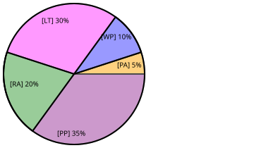

Section 1.4 Grades
Your final grade will be based on 5 components, each weighted differently as shown in the chart in Figure 1.3 All grades will be posted on Blackboard and you should check them for accuracy. After about the first month of class, I’ll post an estimated grade on Blackboard. Please ask if you have any questions!

- Preview Activities [PA] (5%)
-
There will typically be 2 preview activities per week. These will be graded solely based on effort and completion with with a ✓ or an ✗. Only a ✓ earns you credit toward your grade. Your overall Preview Activity grade will be based on the percentage of Activities you earn a ✓ on throughout the semester (e.g. earning a ✓ on 24 out of 26 Activities would result in a 24/26 = 92.3% Preview Activity grade).
- Weekly Practice [WP] (10%)
-
The problems will count for 8% and will be graded based on effort and completion. Presentations will count as 2% of your grade. Students will present these exercises in class and you may correct your work. You earn 1 point per exercise you make an honest effort on, and 1 point for attending class and correcting your work. Your overall Activity grade will be based on the percentage of problems you make an honest effort on (e.g. doing 54 out of 60 problems 54/60 = 90% of the weekly practice assignments) In addition, presentations will be graded solely based on effort and completion. Your overall presentation grade will be based on the following: 3✓ = 100%, 2✓=80%, 1✓=60%, 0✓=0%.
- Proof Portfolio [PP] (35%)
-
You will complete 10 problems/proofs for the portfolio. Each problem is due in 3 consecutive weeks, because you will submit a handwritten rough draft, a typed revision, and a reflection/list of objectives for each problem in consecutive weeks. The second draft of a portfolio problem will be given a grade, but you may continue to revise this work and give yourself a higher grade (with justification) in the final portfolio. The final portfolio grade will be based on your proofs, a reflection, and how the portfolio met given objectives.
- Learning Target Quizzes [LT] (30%)
-
You will earn an “S” (Satisfactory) or an “NY” (Not Yet) on each target. Your overall Learning Target grade will be based on the percentage of Learning Targets you earn an “S” on throughout the semester (e.g. earning an S on 17 out of 20 Learning Targets would result in a 17/20=85% Learning Target grade).
- Review Assessments [RA] (20%)
-
There will be 2 review assessments this semester. You’ll be given a preliminary percentage, and then have the opportunity to revise orally. You can earn all the points back during the oral revision, but the time will be limited.
The following table allows you to convert your weighted percentage to a letter grade. Note the percentage you earned will not be rounded (e.g. 92.8% is an A-).
| A | A- | B+ | B | B- | C+ | C | C- | D+ | D | F |
|---|---|---|---|---|---|---|---|---|---|---|
| \(\ge 93\) | \(\ge 90\) | \(\ge 87\) | \(\ge 83\) | \(\ge 80\) | \(\ge 77\) | \(\ge 73\) | \(\ge 70\) | \(\ge 67\) | \(\ge 63\) | \(\lt 63\) |